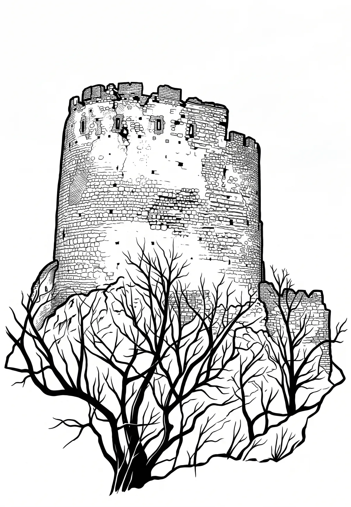

Zřícenina hradu Děvičky
Děvičky (též Dívčí hrady, Maidberg [maidbeʁg] nebo Maidenburg [maidn̩buʁg]) jsou zřícenina gotického hradu tvořící dominantu severního okraje hřebene masívu Děvín, nejvyššího vrcholu Pavlovských vrchů na jižní Moravě. Nachází se na vápencové skále vypínající se do nadmořské výšky 428 metrů. Od roku 1964 je chráněn jako kulturní památka.
Více na Wikipedii